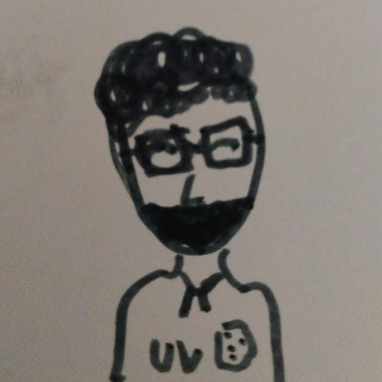

Héctor Olivero Q.

Currently, I am an Associate Professor at the Mathematical Engineering Institute at Faculty of Engineering at Universidad de Valparaíso (UV)
and a member of the research center CIMFAV-UV . Previously, from September of 2017 to July of 2018, I held a Postdoctoral position at INRIA
Sophia Antipolis - Méditerranée where my host was Denis Talay. From March 2018 to March 2021 I developed a FONDECYT Postdoctoral
Research project with the sponsoring of Gregorio Moreno.
In 2016 I completed my Ph.D. in Mathematical Modeling at Universidad de Chile under the supervision of Joaquin Fontbona. During my Ph.D. thesis
I also worked with Mireille Bossy. Before that, in 2011 I completed my Mathematical Engineering degree at Universidad de Chile under the supervision of Joaquin Fontbona.
Research projects
Currently I am a researcher at the following projects:
- MathAmSud project Nº240054: "Cha2man: Stochasticity & Chaos in Multiscale Phenomena" led by Mireille Bossy.
- ANID Fondecyt Regular Nº240054: "Propagation of chaos for mean-field interacting particle systems in mathematical physics and mathematical biology" led by Joaquín Fontbona.
- INRIA Associated Team: "Swam: Seas, waves and Ecosystems" led by Mireille Bossy.
- ANID Exploracion project 13220168: “Biological and Quantum Open System Dynamics: evolution, innovation and mathematical foundations” led by Rolando Rebolledo.
Publications
- A hypothesis test for the domain of attraction of a random variable.
Olivero, Héctor; Talay Denis.
ESAIM: PS, 28 (2024) 292-328. doi: https://doi.org/10.1051/ps/2024010. Available also in Arxiv.
- Synchronization of stochastic mean field networks of Hodgkin-Huxley neurons with noisy channels.
Bossy, Mireille; Fontbona, Joaquín; Olivero, Héctor.
Journal of Mathematical Biology, 78(6), 1771-1820. doi:10.1007/s00285-019-01326-7.
Also available in Arxiv.
- Strong convergence of the symmetrized Milstein scheme for some CEV-like SDEs.
Bossy, Mireille; Olivero, Héctor.
Bernoulli 24 (2018), no. 3, 1995--2042. doi:10.3150/16-BEJ918.
Also available in Arxiv.
Preprints
- Age-structured stochastic populations under dynamic harvesters' behavior: well-posedness, asymptotic stability and numerically-amenable approximations.
M. Isidora Ávila-Thieme, Kerlyns Martínez, Héctor Olivero, Mauricio Tejo, Leonardo Videla
Available on arXiv
- Wright--Fisher kernels: from linear to non-linear dynamics, ergodicity and McKean--Vlasov scaling limits.
Cordero, Fernando; Jorquera, Christian; Olivero, Héctor; Videla, Leonardo.
Available on on arXiv.
- Supplementary Material to ``A hypothesis test for the domain of attraction of a random variable''.
Olivero, Héctor; Talay Denis. Available in HAL.
Students
Acknowledgements
Since I started my PhD several institutions have supported my research, to all of them my deepest gratitude:
- Proyecto Mecesup UCH0607.
- The Dirección de Postgrado y Postítulo de la Vicerrectoría de Asuntos Académicos de la Universidad de Chile.
- The Instituto Francés de Chile - Embajada de Francia en Chile.
- The research center INRIA Sophia Antipolis Méditerranée, France.
- The Center for Mathematical Modeling CMM. Chile.
- Núcleo Milenio Stochastic Models of Complex and Disordered Systems: PROYECTO NUCLEO MILENIO NC 130062.
- NLHPC (ECM-02), Conicyt.
- Beca Chile de Postdoctorado en el Extranjero. (CONICYT).
- ANID